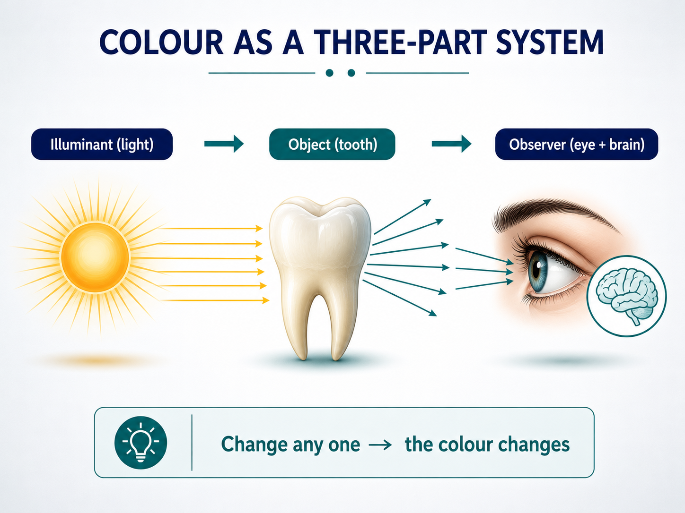
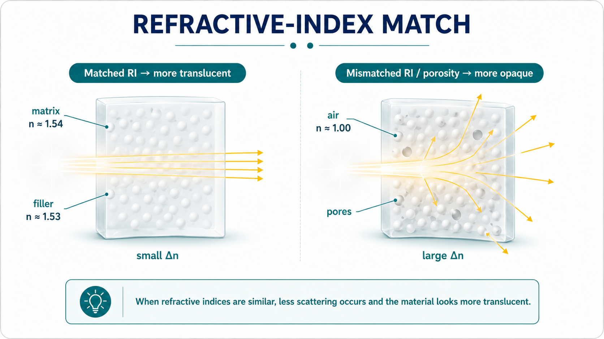
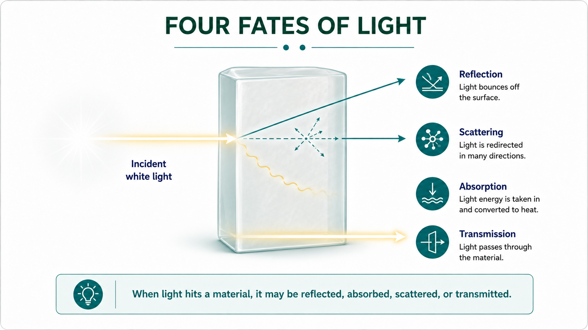
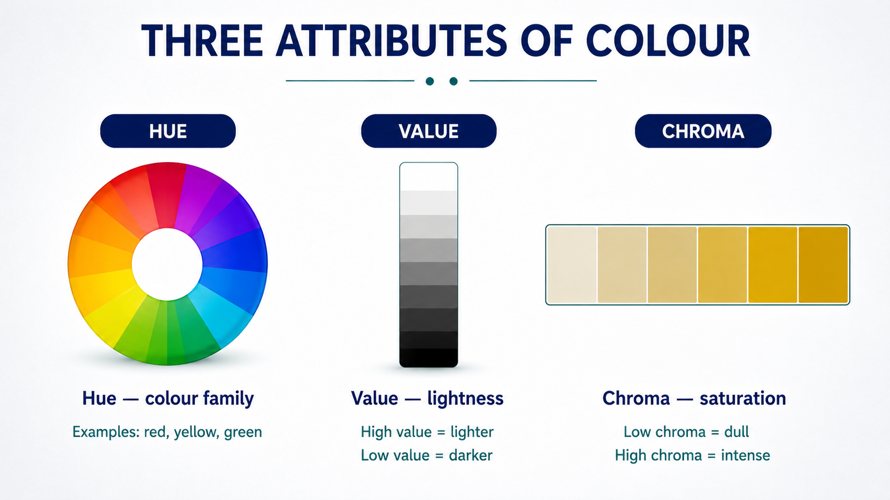
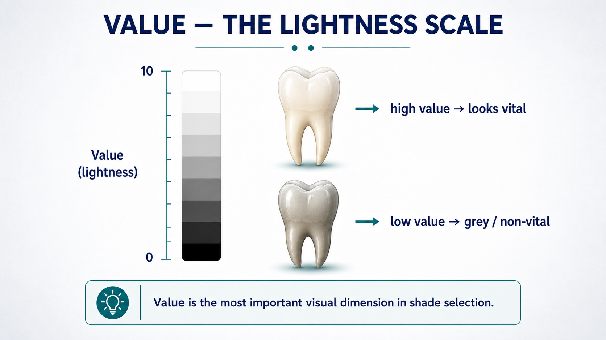
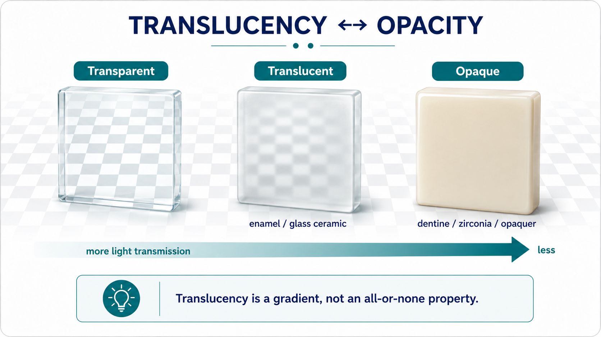
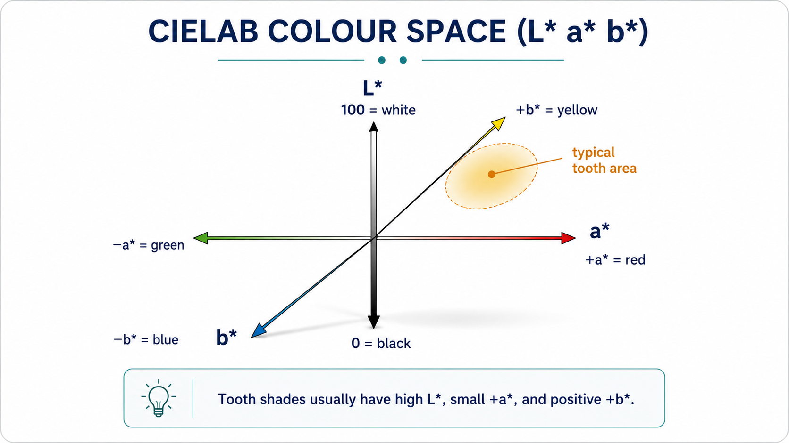
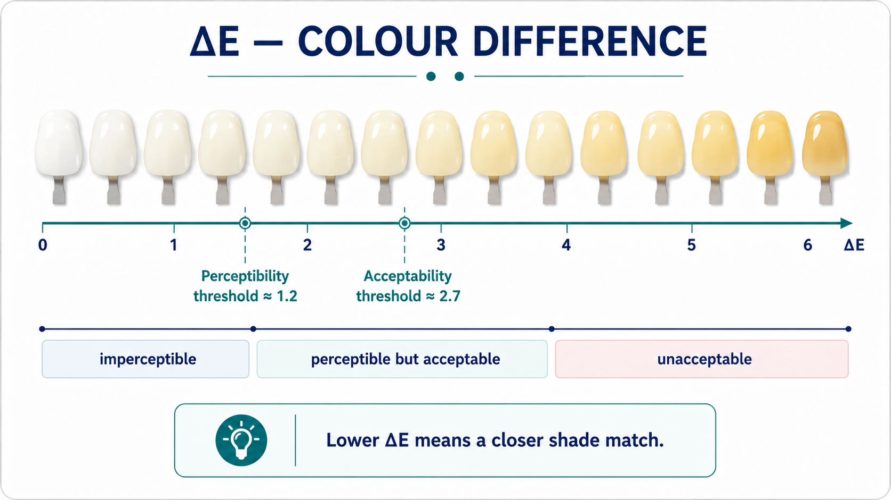
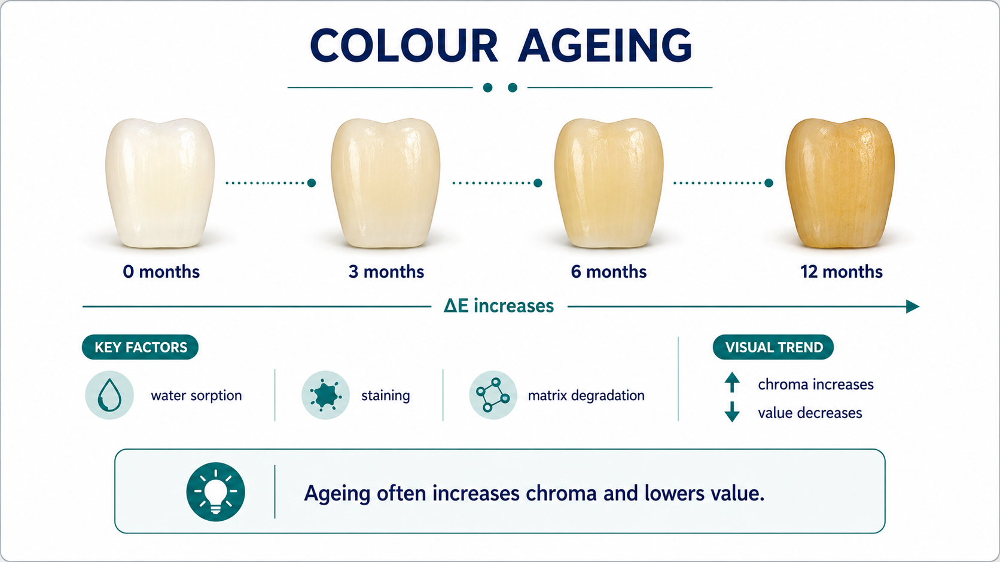

NUS · Dental Materials · Lecture 04
Colour & Optics
Student handout — colour is not a pigment; it is what the material does with light.
Revision aid, not a full transcript. Organised on the structure → property → performance spine.
StructureLight & the material’s microstructure
- Colour is a three-part event: light source + object + observer. Change any one and the perceived colour changes.
- The eye samples the visible spectrum (~380–780 nm) with three cone types (S/M/L) → trichromatic then opponent processing.
- Refractive index (n = c/v) = how much a material slows and bends light. Mismatch in n at an interface → light bends and scatters.
- Key values: enamel ≈ 1.63, dentine ≈ 1.54, hydroxyapatite ≈ 1.62–1.65, water 1.33, air ≈ 1.0; Bis-GMA 1.54, silica ≈ 1.53, TEGDMA 1.46.
- In composites, matching filler and matrix n → translucency; air/water-filled pores (n ≈ 1.0, e.g. a white-spot lesion) scatter strongly → opaque white.


PropertyWhat light does & the three attributes
The four fates of light
- Reflection (specular = glossy surface; diffuse = scattered) and absorption act at the surface.
- Scattering and transmission act in the body of the material — they govern translucency.
- The mix of these four determines the final appearance.

Hue · Value · Chroma
- Hue — the colour family (teeth sit in yellow / yellow-red; Vita families A–D).
- Value — lightness (0–10). Value dominates perceived match: squint to judge it; when unsure “go lighter”.
- Chroma — colour intensity/saturation (highest cervically, lowest incisally); tends to move inversely with value.


Optical properties of teeth & restoratives
- Translucency / opacity (translucency parameter, TP): a gradient — enamel more translucent, dentine more opaque.
- Fluorescence: teeth absorb UV and re-emit visible light (~440–450 nm); dentine ~3× enamel. A non-fluorescent restoration can look dull/grey under UV (a metameric failure).
- Opalescence: enamel scatters short wavelengths → bluish in reflected light, orange in transmitted light (the incisal halo).

PerformanceMeasuring colour & final appearance
Measuring colour objectively
- Munsell: orders colour by Hue Value/Chroma (the basis of Vita-style guides).
- CIELAB (L* a* b*): L* = lightness, a* = green↔red, b* = blue↔yellow — a device-independent 3-D colour space.
- ΔE = distance between two colours in that space. Thresholds (Paravina 2015): perceptibility ΔEab ≈ 1.2, acceptability ΔEab ≈ 2.7.
- Colorimeter vs spectrophotometer: the spectrophotometer measures the full reflectance spectrum → more reliable, and helps detect metamerism (two colours matching under one light but not another).


What sets the final colour (5 factors) & stability
- Composition, thickness, background, surface finish, ageing. Thin/translucent layers let the background show through; polish changes surface reflection.
- Shade-match conditions matter: use neutral daylight, match quickly (eye fatigue), remove strong surrounding colours.
- Ageing: staining, surface roughening and matrix changes shift colour over time — a stability, not just an initial-match, problem.

Take-home
- Refractive-index matching (structure) controls translucency; the four fates of light (property) build appearance; value + ΔE + the five factors (performance) decide the clinical match and its stability.
Dental Materials Science · Lecture 04 handout · structure → property → performance.